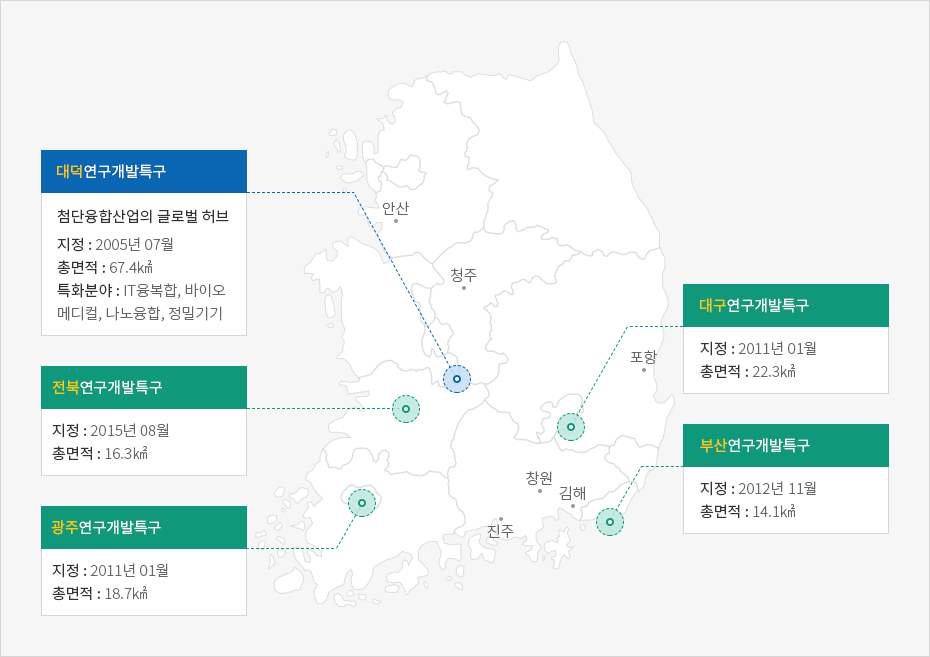
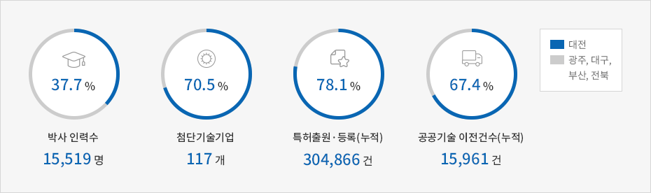
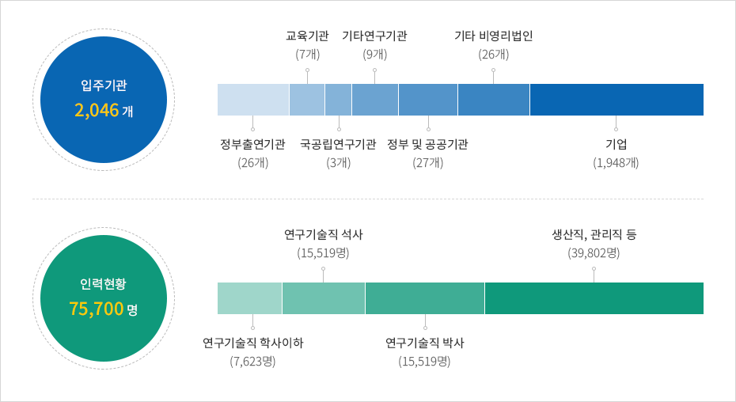
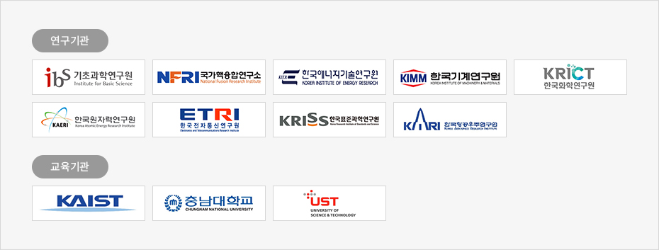

R&D
- Home
- 주요산업
- R&D
대덕연구개발특구
우리나라 연구개발특구 가운데 최대 규모와 성과를 가진 R&D 특구


- 대덕연구개발특구
- 첨단융합산업의 글로벌 허브
- 지정 : 2011년 01월
- 총면적 : 22.3㎢
- 특화분야 : IT융복합, 바이오 메디컬, 나노융합, 정밀기기
- 전북연구개발특구
- 지정 : 2015년 08월
- 총면적 : 16.3㎢
- 광주연구개발특구
- 지정 : 2011년 01월
- 총면적 : 18.7㎢
- 대구연구개발특구
- 지정 : 2011년 01월
- 총면적 : 22.3㎢
- 부산연구개발특구
- 지정 : 2012년 11월
- 총면적 : 14.1㎢

대덕연구개발특구의 위상(5개 연구개발특구 중 대덕특구가 차지하는 비중)


※ 출처 : 연구개발특구진흥재단(2018. 12. 31 기준)
대덕연구개발특구의 현황


※ 출처 : 연구개발특구진흥재단(2018. 12. 31 기준)
주요 연구기관 현황

- 연구기관
- 기초과학연구원
- 국가핵융합연구소
- 한국에너지기술연구원
- 한국기계연구원
- 한국화학연구원
- 한국원자력연구원
- 한국전자통신연구원
- 한국표준과학연구원
- 한국항공우주연구원
- 교육기관
- KAIST
- 충남대학교
- UST